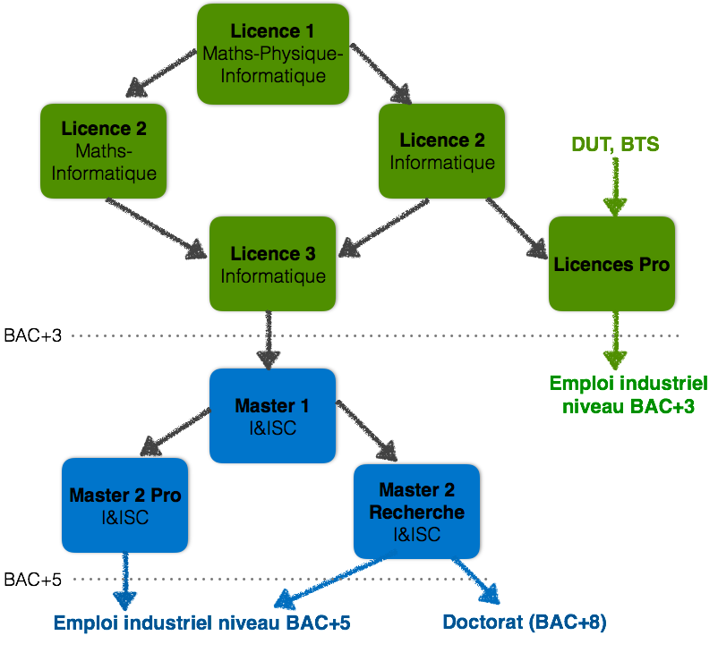

Bienvenue sur le site du Département des Sciences Informatiques de l'Université de Cergy-Pontoise
Intéressé par les sciences informatiques ? Venez étudier au Département des Sciences Informatiques de l'université de Cergy-Pontoise! Le Département vous propose de vous former sur les thématiques à la pointe du domaine, celles qui garantissent un excellent taux d'insertion dans le monde professionnel : informatique embarquée, réseaux et sécurité, systèmes d'information distribués...
De la licence pro aux masters (professionnels et recherche), en apprentissage ou non, vous trouverez forcément le cursus qui vous convient !
De plus, à chaque rentrée depuis 2013, le Département propose aux étudiants qui le souhaitent de s'inscrire en CMI (Cursus de Master en Ingénierie), une nouvelle approche de l'excellence scientifique et technique!
Découvrez dans le schéma ci-dessous, l'ensemble de notre offre de formation :
